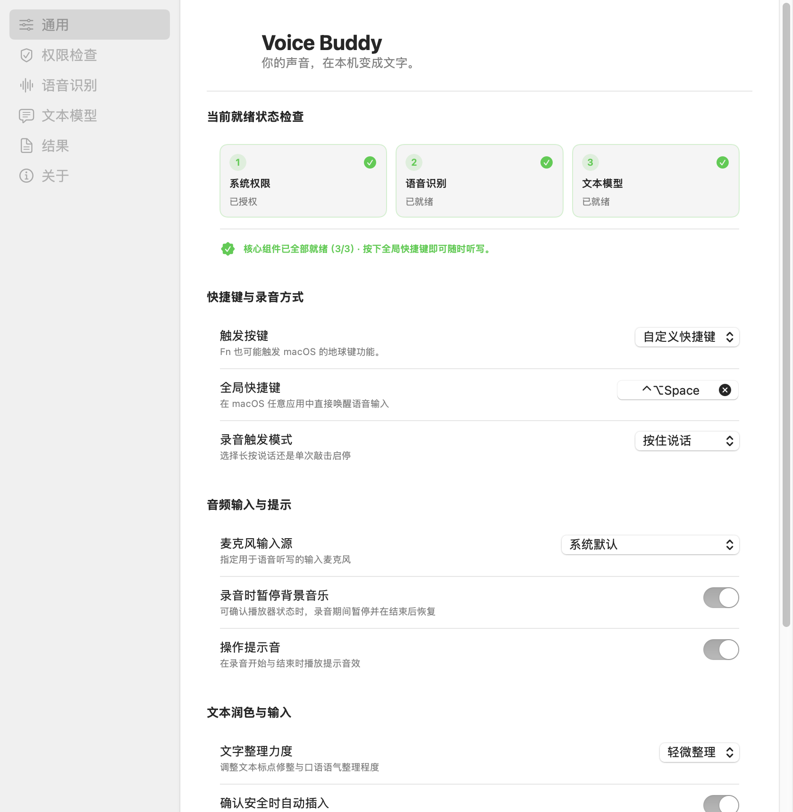

放好光标
在聊天、文档、浏览器或终端中，选择你想输入的位置。
不必停下来打字。按住快捷键说话，松开后，文字就出现在你的光标处。
适用于 Apple Silicon · macOS 15 或更高版本

从想法到文字，
只隔一个快捷键。
在聊天、文档、浏览器或终端中，选择你想输入的位置。
按住快捷键自然表达。也可以在设置中选择 Fn / 🌐 键。
语音转成文字，整理后直接放进当前输入位置。
无论是快速回复，还是整理一段思路，Voice Buddy 陪你把话说完。
不必切换到专门的输入窗口，在常用应用中直接开始听写。
从保留原文到润色重写，选择适合当下的文字整理力度。
自定义快捷键、选择麦克风，还可切换长按或按键启停模式。

让 Voice Buddy 成为你 Mac 上的输入搭子。